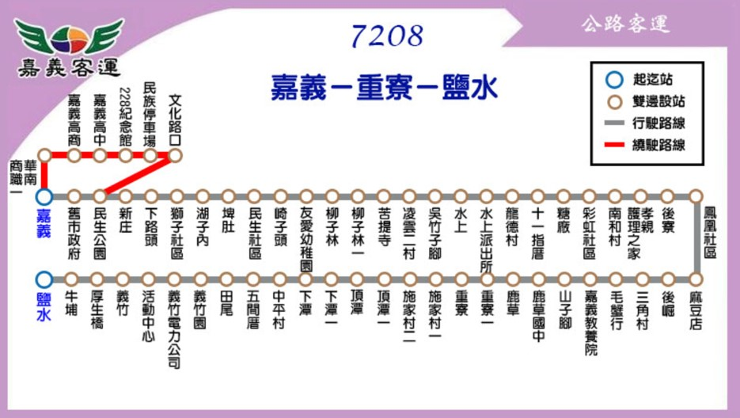
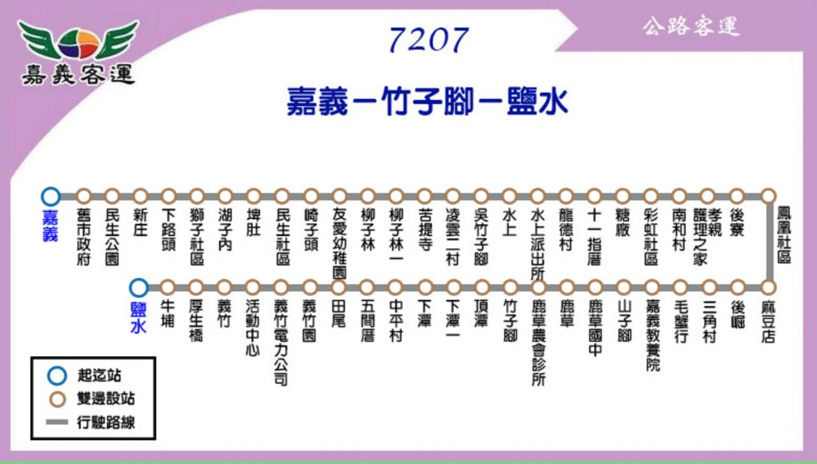
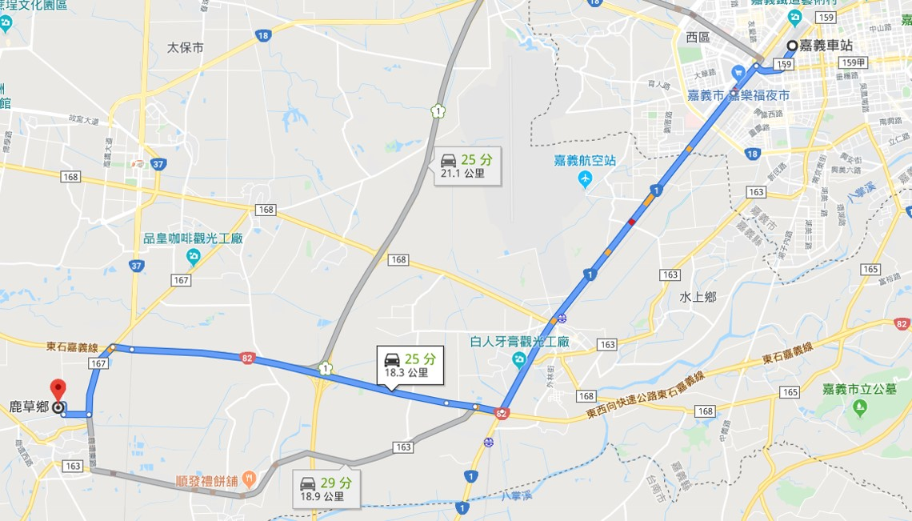

初次到訪鹿草的你/妳，再看完一連串精采的景點介紹後，還是不知道該從何下手?不知道如何安排行程嗎?
別擔心!為初訪露草的旅客量身打造的一日遊懶人包報你知!!!
交通工具:
由嘉義市區通往鹿草可使用的大眾交通運輸工具僅有「公車」，鹿草可是沒有火車站的呦~~
 由於公車可抵達露草的路線僅有2條，且每一班需等上1-2小時，嗯嗯嗯……機動性相當低呢~移動各個景點也不方便。
建議欲前往鹿草觀光的旅客自行開車或騎機車，路線簡單不複雜，最慢30分鐘可以抵達，是不是相當方便呢!!
夏天騎車出去玩一定要記得做好防曬呀!!
建議路線:
09:00 嘉義火車站出發
9:30~:11:30艾美筑植物萃取工坊DIY
09:00 12:00~13:30迷鹿餐廳(午餐)
13:50~14:35鹿草鄉公所
14:40~15:00鹿東紅磚瓦下ㄟ埤頭故事
15:10~15:40日和製冰
16:00~18:00順發餅舖DIY
18:00返回嘉義火車站